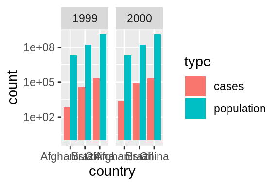
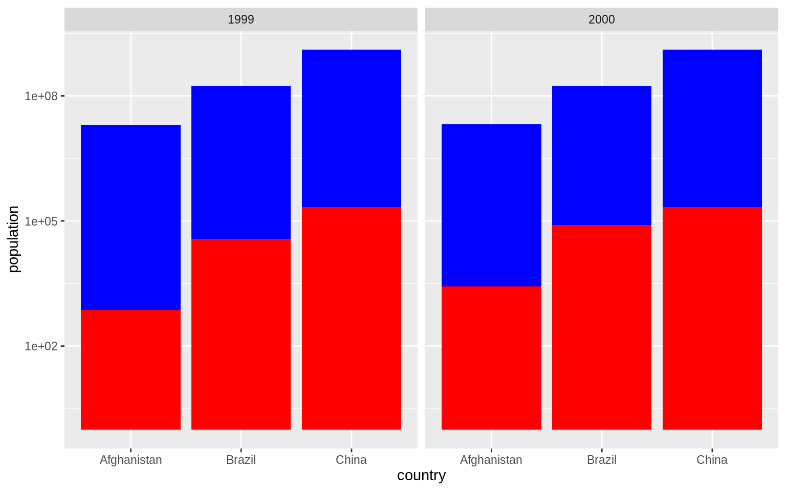
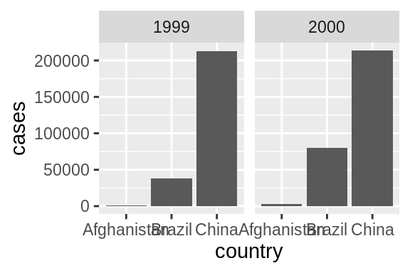
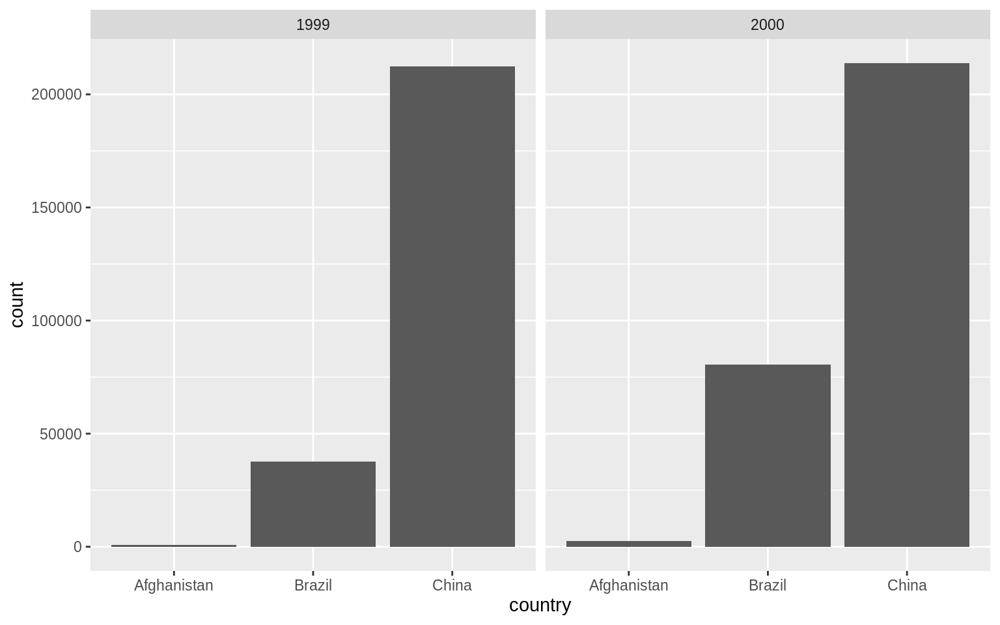
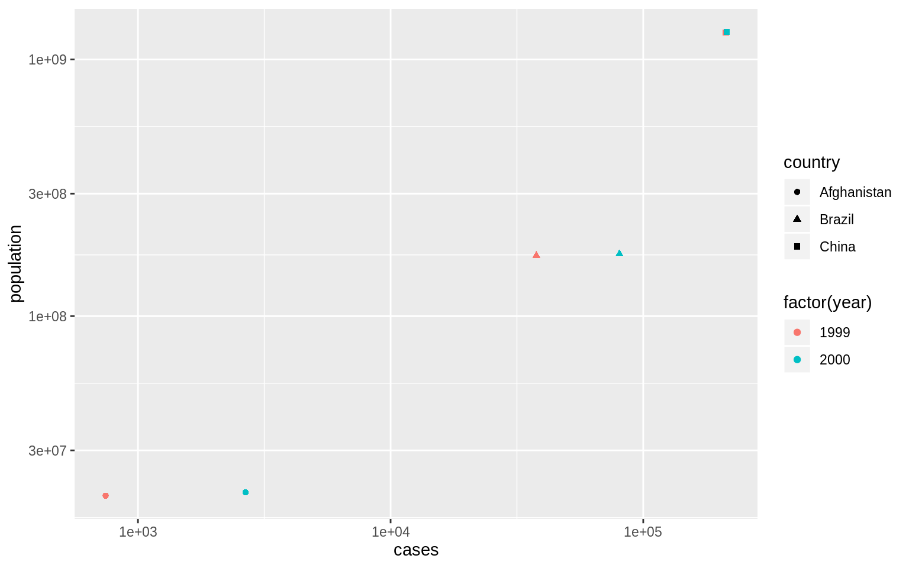

6 Tidying
Rows, columns, cells.
This chapter discusses pivoting and data tidying with the help of the tidyr package.
6.1 Pivoting
Click here to show setup code.
## [conflicted] Removing existing preference## [conflicted] Will prefer [34mdplyr::filter[39m over any other package## [conflicted] Removing existing preference## [conflicted] Will prefer [34mdplyr::lag[39m over any other packagePivoting describes operations that help rearrange data in different ways. The following two tables contain the same data arranged differently.
## # A tibble: 6 x 4
## country year cases population
## <chr> <int> <int> <int>
## 1 Afghanistan 1999 745 19987071
## 2 Afghanistan 2000 2666 20595360
## 3 Brazil 1999 37737 172006362
## 4 Brazil 2000 80488 174504898
## 5 China 1999 212258 1272915272
## 6 China 2000 213766 1280428583
## # A tibble: 12 x 4
## country year type count
## <chr> <int> <chr> <int>
## 1 Afghanistan 1999 cases 745
## 2 Afghanistan 1999 population 19987071
## 3 Afghanistan 2000 cases 2666
## # … with 9 more rows
Both tables contain country and year column that describe the source of the measurements.
The “wider” version, table1, contains two columns that hold the number of cases (of a disease) and the population for the corresponding country in the corresponding year.
In the “longer” version, table2, the number of cases and the population are stored in the same count column, with the type column defining the measurement.
Somewhat counter-intuitively, “longer-form” data is often better suited for analyzing data. “Wider-form” data makes better use of screen space, but may be more difficult to work with.
The following example computes the maximum number of cases and population for each country. For the wider form, this requires repeating the same expression for all columns. This may work with two columns but becomes tedious once more measurements are added.
table1 %>%
group_by(country) %>%
summarize(
max_cases = max(cases),
max_population = max(population)
) %>%
ungroup()## # A tibble: 3 x 3
## country max_cases max_population
## <chr> <int> <int>
## 1 Afghanistan 2666 20595360
## 2 Brazil 80488 174504898
## 3 China 213766 1280428583
The _at family of functions helps iterating over columns, but all columns still need to be enumerated.
(Specifying ranges of columns is rather brittle.)
## # A tibble: 3 x 3
## country cases population
## <chr> <int> <int>
## 1 Afghanistan 2666 20595360
## 2 Brazil 80488 174504898
## 3 China 213766 1280428583
If the data is in the “longer” form, it is sufficient to include type in the grouping variables.
The same code works for arbitrary number of measurements.
## # A tibble: 6 x 3
## country type max
## <chr> <chr> <int>
## 1 Afghanistan cases 2666
## 2 Afghanistan population 20595360
## 3 Brazil cases 80488
## 4 Brazil population 174504898
## 5 China cases 213766
## 6 China population 1280428583
The following examples give a gentle introduction into pivoting.
6.1.1 Convert to longer form
The pivot_longer() function takes a “wider-form” dataset and converts it to an equivalent dataset with more rows.
## # A tibble: 6 x 4
## country year cases population
## <chr> <int> <int> <int>
## 1 Afghanistan 1999 745 19987071
## 2 Afghanistan 2000 2666 20595360
## 3 Brazil 1999 37737 172006362
## 4 Brazil 2000 80488 174504898
## 5 China 1999 212258 1272915272
## 6 China 2000 213766 1280428583
## # A tibble: 12 x 4
## country year name value
## <chr> <int> <chr> <int>
## 1 Afghanistan 1999 cases 745
## 2 Afghanistan 1999 population 19987071
## 3 Afghanistan 2000 cases 2666
## # … with 9 more rows
The -c(...) notation indicates that all column except country and year are to be transformed into longer form.
The column names become the contents of the new name column, the values are available in the value column.
The result of this operation isn’t strictly equivalent to table2, we need to rename and sort differently.
Alternatively, the names_to and values_to arguments allow specifying the names of the new columns.
table1 %>%
pivot_longer(-c(country, year)) %>%
rename(type = name, count = value) %>%
arrange(country, year, type)## # A tibble: 12 x 4
## country year type count
## <chr> <int> <chr> <int>
## 1 Afghanistan 1999 cases 745
## 2 Afghanistan 1999 population 19987071
## 3 Afghanistan 2000 cases 2666
## # … with 9 more rows
table1 %>%
pivot_longer(
-c(country, year),
names_to = "type",
values_to = "count"
) %>%
arrange(country, year, type)## # A tibble: 12 x 4
## country year type count
## <chr> <int> <chr> <int>
## 1 Afghanistan 1999 cases 745
## 2 Afghanistan 1999 population 19987071
## 3 Afghanistan 2000 cases 2666
## # … with 9 more rows
6.1.2 Convert to wider form
The pivot_wider() form does the inverse: it creates a dataset with fewer rows.
If the name and value columns are named differently, these columns can be provided via the names_from and values_from arguments.
## # A tibble: 12 x 4
## country year type count
## <chr> <int> <chr> <int>
## 1 Afghanistan 1999 cases 745
## 2 Afghanistan 1999 population 19987071
## 3 Afghanistan 2000 cases 2666
## # … with 9 more rows
## # A tibble: 6 x 4
## country year cases population
## <chr> <int> <int> <int>
## 1 Afghanistan 1999 745 19987071
## 2 Afghanistan 2000 2666 20595360
## 3 Brazil 1999 37737 172006362
## 4 Brazil 2000 80488 174504898
## 5 China 1999 212258 1272915272
## 6 China 2000 213766 1280428583
## # A tibble: 6 x 4
## country year cases population
## <chr> <int> <int> <int>
## 1 Afghanistan 1999 745 19987071
## 2 Afghanistan 2000 2666 20595360
## 3 Brazil 1999 37737 172006362
## 4 Brazil 2000 80488 174504898
## 5 China 1999 212258 1272915272
## 6 China 2000 213766 1280428583
6.1.3 Use cases
Data in “longer” form usually works better for plotting the values side by side, e.g. by assigning the type of value to an aesthetic.
Recall that each row in the data produces one geometric object in the corresponding layer.
For a bar chart that shows cases and population side by side, mapped to the y aesthetic, the “longer” form is more natural.
table2form requires only one layer, the fill color is determined automatically, the legend is created automaticallytable1requires two layers, manual assignment of fill color, and manual creation of legend (not shown)
table2 %>%
ggplot() +
geom_col(aes(country, count, fill = type), position = "dodge") +
facet_wrap(~year) +
scale_y_log10()
table1 %>%
ggplot() +
geom_col(aes(country, population), position = "dodge", fill = "blue") +
geom_col(aes(country, cases), position = "dodge", fill = "red") +
facet_wrap(~year) +
scale_y_log10()
On the other hand, iIf only a single measurement needs to be plotted, the “wider” form is easier to work with.
table1only requires selecting the correct columntable2requires afilter()


The “wider” form is also the only way to map different measures to different aesthetics, e.g. to correlate values.
table1 %>%
ggplot() +
geom_point(aes(cases, population, color = factor(year), shape = country)) +
scale_x_log10() +
scale_y_log10()
6.1.4 Combining vertically
A different view on the same data is given in the two tables table4a and table4b.
## # A tibble: 3 x 3
## country `1999` `2000`
## * <chr> <int> <int>
## 1 Afghanistan 745 2666
## 2 Brazil 37737 80488
## 3 China 212258 213766
## # A tibble: 3 x 3
## country `1999` `2000`
## * <chr> <int> <int>
## 1 Afghanistan 19987071 20595360
## 2 Brazil 172006362 174504898
## 3 China 1272915272 1280428583
The bind_rows() function combines these two parts into a single table.
The .id = "type" setting ensures that the input datasets gain different tags in the new type column.
## # A tibble: 6 x 4
## type country `1999` `2000`
## <chr> <chr> <int> <int>
## 1 cases Afghanistan 745 2666
## 2 cases Brazil 37737 80488
## 3 cases China 212258 213766
## 4 population Afghanistan 19987071 20595360
## 5 population Brazil 172006362 174504898
## 6 population China 1272915272 1280428583
As before, pivot_longer() helps converting the results into something similar to table2.
The result isn’t quite the same yet, can you spot the difference?
## # A tibble: 12 x 4
## type country name value
## <chr> <chr> <chr> <int>
## 1 cases Afghanistan 1999 745
## 2 cases Afghanistan 2000 2666
## 3 cases Brazil 1999 37737
## # … with 9 more rows
6.1.5 Tidy data
From “R for data science”:
In a tidy dataset,
- each variable must have its own column.
- each observation must have its own row.
- each value must have its own cell.

Tidy data
The following example shows a case that violates the first two rules: WHO data arranged for optimal use of screen space.
The column names define, in addition to the measurement type new_sp, new_sn, new_ep and newrel, the age and sex stratum of the corresponding measurements.
One single pivot_longer() call transforms the data into a longer-form version with four measurement columns and one row for each age/sex stratum.
The names_pattern is a regular expression that defines what part of the column name is stored where.
(Regular expressions are a powerful tool for parsing text data, out of scope for this lecture but very much worth looking into.)
The names_to sequence defines, for each () group in names_pattern, if the data encoded in the column name is stored in a new column or if it is kept as column name.
## # A tibble: 7,240 x 60
## country iso2 iso3 year new_sp_m014 new_sp_m1524
## <chr> <chr> <chr> <int> <int> <int>
## 1 Afghan… AF AFG 1980 NA NA
## 2 Afghan… AF AFG 1981 NA NA
## 3 Afghan… AF AFG 1982 NA NA
## # … with 7,237 more rows, and 54 more variables:
## # new_sp_m2534 <int>, new_sp_m3544 <int>,
## # new_sp_m4554 <int>, new_sp_m5564 <int>, new_sp_m65 <int>,
## # new_sp_f014 <int>, new_sp_f1524 <int>,
## # new_sp_f2534 <int>, new_sp_f3544 <int>,
## # new_sp_f4554 <int>, new_sp_f5564 <int>, new_sp_f65 <int>,
## # new_sn_m014 <int>, new_sn_m1524 <int>,
## # new_sn_m2534 <int>, new_sn_m3544 <int>,
## # new_sn_m4554 <int>, new_sn_m5564 <int>, new_sn_m65 <int>,
## # new_sn_f014 <int>, new_sn_f1524 <int>,
## # new_sn_f2534 <int>, new_sn_f3544 <int>,
## # new_sn_f4554 <int>, new_sn_f5564 <int>, new_sn_f65 <int>,
## # new_ep_m014 <int>, new_ep_m1524 <int>,
## # new_ep_m2534 <int>, new_ep_m3544 <int>,
## # new_ep_m4554 <int>, new_ep_m5564 <int>, new_ep_m65 <int>,
## # new_ep_f014 <int>, new_ep_f1524 <int>,
## # new_ep_f2534 <int>, new_ep_f3544 <int>,
## # new_ep_f4554 <int>, new_ep_f5564 <int>, new_ep_f65 <int>,
## # newrel_m014 <int>, newrel_m1524 <int>,
## # newrel_m2534 <int>, newrel_m3544 <int>,
## # newrel_m4554 <int>, newrel_m5564 <int>, newrel_m65 <int>,
## # newrel_f014 <int>, newrel_f1524 <int>,
## # newrel_f2534 <int>, newrel_f3544 <int>,
## # newrel_f4554 <int>, newrel_f5564 <int>, newrel_f65 <int>
who_longer <-
who %>%
pivot_longer(
-(country:year),
names_pattern = "([a-z_]+)_(.)([0-9]+)",
names_to = c(".value", "sex", "age")
)
who_longer## # A tibble: 101,360 x 10
## country iso2 iso3 year sex age new_sp new_sn new_ep
## <chr> <chr> <chr> <int> <chr> <chr> <int> <int> <int>
## 1 Afghan… AF AFG 1980 m 014 NA NA NA
## 2 Afghan… AF AFG 1980 m 1524 NA NA NA
## 3 Afghan… AF AFG 1980 m 2534 NA NA NA
## # … with 1.014e+05 more rows, and 1 more variable:
## # newrel <int>
## # A tibble: 14 x 3
## sex age n
## <chr> <chr> <int>
## 1 f 014 7240
## 2 f 1524 7240
## 3 f 2534 7240
## # … with 11 more rows
6.2 Separating and uniting
Click here to show setup code.
## [conflicted] Removing existing preference## [conflicted] Will prefer [34mdplyr::filter[39m over any other package## [conflicted] Removing existing preference## [conflicted] Will prefer [34mdplyr::lag[39m over any other packageThe table3 table violates the third principle of tidy data: each cell contains two values.
## # A tibble: 6 x 3
## country year rate
## * <chr> <int> <chr>
## 1 Afghanistan 1999 745/19987071
## 2 Afghanistan 2000 2666/20595360
## 3 Brazil 1999 37737/172006362
## 4 Brazil 2000 80488/174504898
## 5 China 1999 212258/1272915272
## 6 China 2000 213766/1280428583
The separate() verb offers a convenient way to deal with this situation, including automatic type conversion.
## # A tibble: 6 x 4
## country year cases population
## <chr> <int> <chr> <chr>
## 1 Afghanistan 1999 745 19987071
## 2 Afghanistan 2000 2666 20595360
## 3 Brazil 1999 37737 172006362
## 4 Brazil 2000 80488 174504898
## 5 China 1999 212258 1272915272
## 6 China 2000 213766 1280428583
## # A tibble: 6 x 4
## country year cases population
## <chr> <int> <int> <int>
## 1 Afghanistan 1999 745 19987071
## 2 Afghanistan 2000 2666 20595360
## 3 Brazil 1999 37737 172006362
## 4 Brazil 2000 80488 174504898
## 5 China 1999 212258 1272915272
## 6 China 2000 213766 1280428583
The inverse is offered by unite().
The data in table5 stores year data in two columns.
## # A tibble: 6 x 4
## country century year rate
## * <chr> <chr> <chr> <chr>
## 1 Afghanistan 19 99 745/19987071
## 2 Afghanistan 20 00 2666/20595360
## 3 Brazil 19 99 37737/172006362
## 4 Brazil 20 00 80488/174504898
## 5 China 19 99 212258/1272915272
## 6 China 20 00 213766/1280428583
## # A tibble: 6 x 3
## country year rate
## <chr> <chr> <chr>
## 1 Afghanistan 19_99 745/19987071
## 2 Afghanistan 20_00 2666/20595360
## 3 Brazil 19_99 37737/172006362
## 4 Brazil 20_00 80488/174504898
## 5 China 19_99 212258/1272915272
## 6 China 20_00 213766/1280428583
The result needs a few tweaks to finally resemble table3.
## # A tibble: 6 x 3
## country year rate
## <chr> <chr> <chr>
## 1 Afghanistan 1999 745/19987071
## 2 Afghanistan 2000 2666/20595360
## 3 Brazil 1999 37737/172006362
## 4 Brazil 2000 80488/174504898
## 5 China 1999 212258/1272915272
## 6 China 2000 213766/1280428583
## # A tibble: 6 x 3
## country year rate
## <chr> <dbl> <chr>
## 1 Afghanistan 1999 745/19987071
## 2 Afghanistan 2000 2666/20595360
## 3 Brazil 1999 37737/172006362
## 4 Brazil 2000 80488/174504898
## 5 China 1999 212258/1272915272
## 6 China 2000 213766/1280428583
See the help for further details.
6.2.1 Parsing numbers
## # A tibble: 2 x 1
## num
## <chr>
## 1 1'000.00
## 2 2'000'000.00
## Warning: Expected 1 pieces. Additional pieces discarded in 2
## rows [1, 2].## # A tibble: 2 x 1
## num
## <chr>
## 1 1
## 2 2
thousand_separator %>%
mutate(num = str_replace_all(num, "[^-0-9.]", "")) %>%
mutate(num = as.numeric(num))## # A tibble: 2 x 1
## num
## <dbl>
## 1 1000
## 2 2000000
6.3
Click here to show setup code.
## [conflicted] Removing existing preference## [conflicted] Will prefer [34mdplyr::filter[39m over any other package## [conflicted] Removing existing preference## [conflicted] Will prefer [34mdplyr::lag[39m over any other package## type cases population
## country year
## Afghanistan 1999 745 19987071
## 2000 2666 20595360
## Brazil 1999 37737 172006362
## 2000 80488 174504898
## China 1999 212258 1272915272
## 2000 213766 1280428583## year 1999 2000
## type cases population cases population
## country
## Afghanistan 745 19987071 2666 20595360
## Brazil 37737 172006362 80488 174504898
## China 212258 1272915272 213766 1280428583## [1] NA